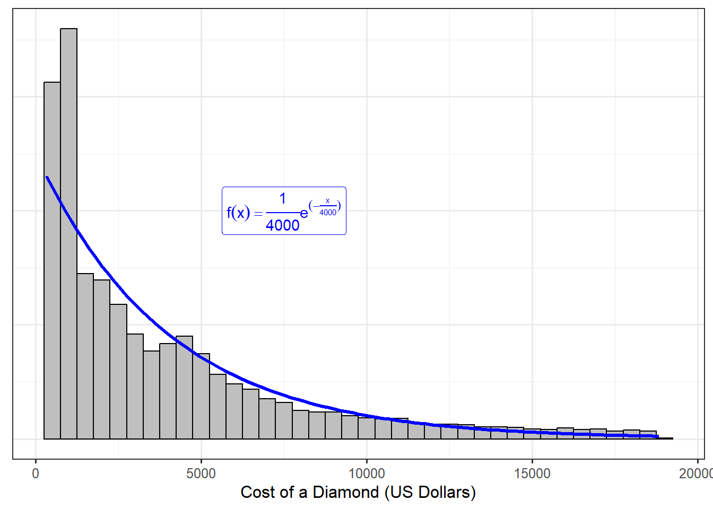
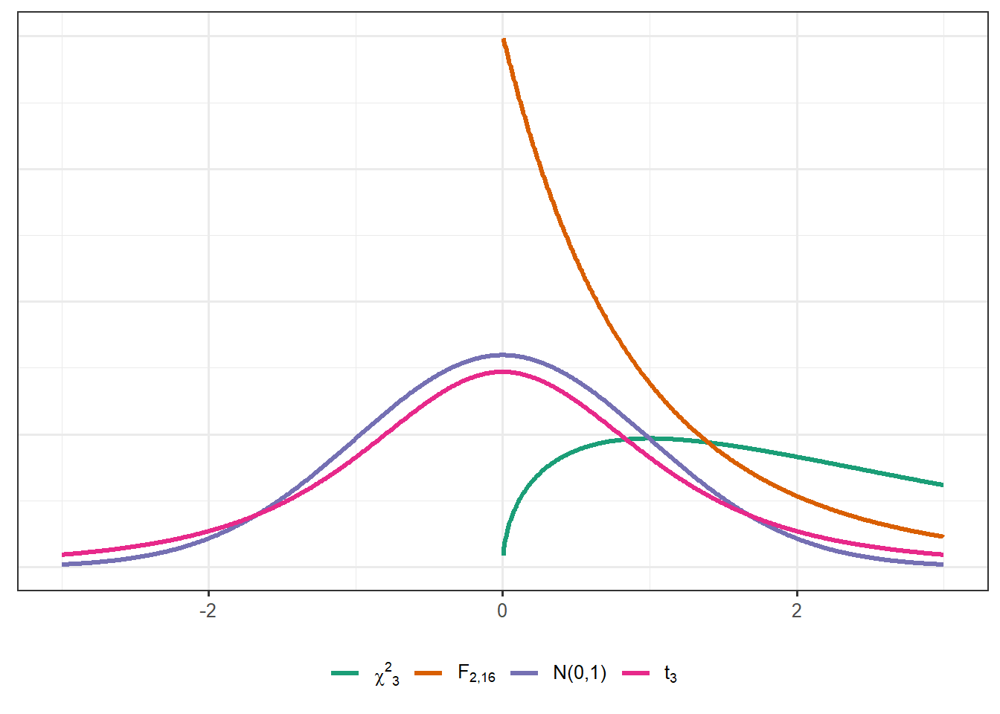

2 Random Variables and Distributions
In Chapter 1, we discussed the probability of an “event.” For statisticians, the events of interests center on measurements, or functions of those measurements, that we plan to take. In this chapter, we begin to connect probability to data analysis. Our goal is to reexamine concepts introduced in a probability course, relating them to their data-centric analogues.
2.1 Random Variables
Consider collecting data; before the data is collected, we cannot predict with certainty what we will observe. Therefore, we can think of each observation as the result of a random process. These observations are recorded as variables in our dataset. In probability, a random variable is used to represent a measurement that results from a random process.
Definition 2.1 (Random Variable) Let \(\mathcal{S}\) be the sample space corresponding to a random process; a random variable \(X\) is a function mapping elements of the sample space to the real line.
Random variables represent a measurement that will be collected during the course of a study. Random variables are typically represented by a capital letter.
While for our purposes, it suffices to think of a random variable as a measurement, mathematically, it is a function. The image (or range) of this function is used to broadly classify random variables as continuous or discrete; we refer to this image as the support of the random variable.
Definition 2.2 (Support) The support of a random variable is the set of all possible values the random variable can take.
Definition 2.3 (Continuous and Discrete Random Variable) The random variable \(X\) is said to be a discrete random variable if its corresponding support is countable. The random variable \(X\) is said to be a continuous random variable if the corresponding support is uncountable (such as an interval or a union of intervals on the real line).
Discrete random variables are analogous to categorical (or qualitative) variables in data analysis; that is, discrete random variables are used to model the result of a random process which categorizes each unit of observation into a group. Continuous random variables are analogous to numeric (or quantitative) variables in data analysis; continuous random variables are used to model the result of a random process which produces a number for which arithmetic makes sense.
Warning
Whether we use a continuous or discrete random variable to represent a measurement is not always obvious. Suppose we consider recording the age of a student selected from a class at a university that typically enrolls “traditional” students (those coming directly from high school). Let the random variable \(X\) denote the age of the student.
If we record the student’s age in years since birth, \(X\) can take on only a finite number of values (most likely \(\{18, 19, 20, 21, 22, 23\}\)), making it a discrete random variable. However, if we record the student’s age as the number of seconds since birth, we might well consider the support of \(X\) to be a rather large interval, leading to a continuous random variable.
The goal of statistics is to use a sample to say something about the underlying population. Consider taking a sample of size \(n\) and measuring a single variable on each unit of observation. Then, we might represent the measurements we will obtain (note the use of the future tense) as \(X_1, X_2, \dots, X_n\). While the majority of probability courses focus on a single, or maybe two, random variables, note that collecting data on a sample requires that we deal with at least \(n\) random variables (one measurement for each of the observations in our sample).
2.2 Characterizing a Distribution
Again, the goal of statistics is to use a sample to say something about the underlying population. Consider the following research objective:
Estimate the cost (in US dollars) of a diamond for sale in the United States.
For this research objective, our population of interest is all diamonds for sale in the United States. We would not expect every diamond for sale to have the same price; variability is inherent in any process. As a result, the sale price of diamonds has a distribution across this population. This is our primary use of probability theory in a statistical analysis — to model distributions.
Consider taking a sample of size 1 from the population; let \(Y\) represent the cost of the diamond that is selected. Since we have not yet observed the cost of this diamond, \(Y\) is a random variable. And, since this diamond is sampled from the population of interest, the support of \(Y\) is determined by the cost of diamonds in the United States. Further, the likelihood that \(Y\) falls within any interval is determined by the distribution of the cost across the population. That is, the distribution of \(Y\) is the distribution of the population.
Big Idea
If a random variable \(X\) represents a measurement for a single observation from a population, the distribution of the random variable corresponds to the distribution of the variable across the population.
A key realization in statistical analysis is that we will never fully observe the distribution of the population; however, we can posit a model for this distribution. In probability, the most common way to characterize the distribution of a random variable is through its density function.
Definition 2.4 (Density Function) A density function \(f\) relates the values in the support of a random variable with the probability of observing those values.
Let \(X\) be a continuous random variable, then its density function \(f\) is the function such that
\[Pr(a \leq X \leq b) = \int_a^b f(x) dx\]
for any real numbers \(a\) and \(b\) in the support.
Let \(X\) be a discrete random variable, then its density function \(f\) is the function such that
\[Pr(X = u) = f(u)\]
for any real number \(u\) in the support.
Properties of a Density Function
Let \(X\) be a random variable with density function \(f\) defined over support \(\mathcal{S}\). Then,
- \(f(x) \geq 0\) for all \(x \in \mathcal{S}\). That is, the density is non-negative for all values in the support.
- If \(X\) is a continuous random variable, then \(\int_{\mathcal{S}} f(x) dx = 1\); similarly, if \(X\) is a discrete random variable, then \(\sum_{\mathcal{S}} f(x) = 1\). That is, \(X\) must take a value in its support; so, \(Pr(X \in \mathcal{S}) = 1\), similar to the second Axiom of Probability (Definition 1.3).
- \(f(x) = 0\) for all values of \(x \notin \mathcal{S}\). The density takes the value of 0 for all values outside the support.
Note
In a probability course, there is often a distinction made between probability “density” functions (used for continuous random variables) and probability “mass” functions (used for discrete random variables). We do not make this distinction and instead rely on the context to determine whether we are dealing with a continuous or discrete random variable. Throughout, we will note when the operations differ between these two types of variables. Measure theory provides a unifying framework to these issues.
With few exceptions, we will be working with continuous random variables. As a result, the density function is a smooth function over some region, and the actual value of the function is not interpretable; instead, we get at a probability by considering the area under the curve. Again, drawing connections to data analysis, we can think of a density function as a mathematical formula representing a smooth histogram. The area under the curve for any region gives the proportion of the population which has a value in that region. That is, we get the probability that a random variable will be in an interval by integrating the density function over that interval.
Figure Figure 2.1 illustrates this idea; we have data from a sample of diamonds from the population of interest. The sample is summarized with a histogram; we have overlayed a posited density (with the corresponding mathematical function that describes this density) for the population. The sample (summarized with the histogram) is approximating the population (modeled using the density function).
You may recognize the particular form of the density function in Figure 2.1. The general form is
\[f(x) = \frac{1}{\sigma} e^{-x / \sigma} \qquad \text{for } x > 0\]
where \(\sigma\) is the scale parameter that defines the distribution (set at 4000 in Figure 2.1). This is known as the Exponential distribution with scale parameter \(\sigma\). This illuminates another connection between probability and statistics.
Note that our research objective describe above is an ill-posed question as stated. The answer is “it depends” since each individual diamond in the population has a different value. Well-posed questions in statistics are centered on an appropriately chosen parameter.
Definition 2.5 (Parameter) Numeric quantity which summarizes the distribution of a variable within the population of interest. Generally denoted by Greek letters in statistical formulas.
In probability, the parameters are values that are tuned or set within a problem; we then work forward to compute the probability of an event of interest. In practice, however, when we posit a functional form for a density function to describe the distribution of the population, the parameters are unknown. We plan to use the data to estimate or characterize the parameter; but, the parameter itself will remain unknown. In both cases, however, the parameter is a fixed quantity, even if we are ignorant of that value.
Big Idea
When a probability model is specified for a population, it is generally specified up to some unknown parameter(s). Making inference on the unknown parameter(s) therefore characterizes the entire distribution.
2.2.1 Common Parameters
Most scientific questions are focused on the location or spread of a distribution. For example, we are interested in estimating the average cost of a diamond sold in the United States. Introductory statistics introduces summaries of location and spread within the sample (e.g., sample mean for location and sample variance for spread). Analogous summaries exist for density functions. As stated above, parameters are unknown constants that govern the form of the density function. Because they govern the form of the density, the parameters are also related to those summarizing the location or spread of the distribution.
Definition 2.6 (Expected Value (Mean)) Let \(X\) be a random variable with density function \(f\) defined over the support \(\mathcal{S}\). The expected value of a random variable, also called the mean and denoted \(E(X)\), is given by
\[E(X) = \int_{\mathcal{S}} x f(x) dx\]
for continuous random variables and
\[E(X) = \sum_{\mathcal{S}} x f(x)\]
for discrete random variables.
Notice the similarity between the form of the sample mean and the population mean. A sample mean takes the sum of each value in the sample, weighting each value by \(1/n\) (where \(n\) is the sample size). Without information about the underlying population, the sample must treat each value observed as equally likely; values become more likely if they appear multiple times. In the population, however, when the form of \(f\) is known, the density provides information about the likelihood of each value giving us a better weight than \(1/n\). That is, the population mean is a sum of the values in the support, weighting each value by the corresponding value of the density function.
Definition 2.7 (Variance) Let \(X\) be a random variable with density function \(f\) defined over the support \(\mathcal{S}\). The variance of a random variable, denoted \(Var(X)\), is given by
\[Var(X) = E\left[X - E(X)\right]^2 = E\left(X^2\right) - E^2(X).\]
If we let \(\mu = E(X)\), then this is equivalent to
\[\int_{\mathcal{S}} (x - \mu)^2 f(x) dx\]
for continuous random variables and
\[\sum_{\mathcal{S}} (x - \mu)^2 f(x)\]
for discrete random variables.
Warning
Pay careful attention to the notation. \(E^2(X)\) represents the square of the expected value; that is,
\[E^2(X) = \left[E(X)\right]^2.\]
However, \(E(X)^2\) represents the expected value of the square of \(X\); that is,
\[E(X)^2 = E\left(X^2\right).\]
The variance provides a measure of spread; in particular, it is capturing distance from the mean. Notice that the form of the variance involves taking the expectation of a squared term; in general, we will need to consider expectations of functions.
Definition 2.8 (Expectation of a Function) Let \(X\) be a random variable with density function \(f\) over the support \(\mathcal{S}\), and let \(g\) be a real-valued function. Then,
\[E\left[g(X)\right] = \int_{\mathcal{S}} g(x) f(x) dx\]
for continuous random variables and
\[E\left[g(X)\right] = \sum_{\mathcal{S}} g(x) f(x)\]
for discrete random variables.
A result of Definition 2.8 is the following, very useful theorem, which states that expectations are linear operators.
Theorem 2.1 (Expectation of a Linear Combination) Let \(X\) be a random variable, and let \(a_1, a_2, \dotsc, a_m\) be real-valued constants and \(g_1, g_2, \dotsc, g_m\) be real-valued functions; then,
\[E\left[\sum_{i=1}^{m} a_i g_i(X)\right] = \sum_{i=1}^{m} a_i E\left[g_i(X)\right].\]
The mean and variance play an important role in characterizing a distribution, especially within statistical theory (as we will see in future chapters). However, there is another set of parameters which are important.
Definition 2.9 (Percentile) Let \(X\) be a random variable with density function \(f\). The \(100k\) percentile is the value \(q\) such that
\[Pr(X \leq q) = k.\]
Example 2.1 (Parameters of Exponential Distribution) Let \(X\) be an Exponential distribution with scale parameter \(\sigma\); that is, the density function \(f\) is given by
\[f(x) = \frac{1}{\sigma} e^{-x/\sigma} \qquad x > 0\]
where \(\sigma > 0.\) Compute the mean, variance, and median of this distribution, as a function of the unknown scale parameter.
The solution to this problem is particularly important as it illustrates a very useful technique when working with known distributions in statistical theory.
Solution. We note that the function
\[g(y) = \frac{1}{\beta^{\alpha} \Gamma(\alpha)} y^{\alpha - 1} e^{-y/\beta}\]
is a valid density function over the positive real line provided that \(\alpha,\beta > 0\); in particular, this is known as a Gamma distribution. Since \(g\) is a valid density function, then we know that
\[\int_{0}^{\infty} g(y) dy = 1\]
for all values of \(\alpha,\beta > 0\).
Now, let \(X\) be an Exponential random random variable with scale parameter \(\sigma\). Then, the expected value of \(X\) is given by
\[ \begin{aligned} E(X) &= \int_{0}^{\infty} x \frac{1}{\sigma} e^{-x/\sigma} dx \\ &= \int_{0}^{\infty} \frac{1}{\sigma} x^{2-1} e^{-x/\sigma} dx \end{aligned} \]
where we have simply rewritten the exponent in the second line. Notice that expression within the integral shares a striking similarity to the form of the density function of a Gamma distribution; however, they are not exactly the same. To coerce the expression into that of the Gamma density function, we “do nothing” — multiplying and dividing the expression by the quantity \(\sigma\Gamma(2)\). This gives
\[ \begin{aligned} E(X) &= \int_{0}^{\infty} x \frac{1}{\sigma} e^{-x/\sigma} dx \\ &= \int_{0}^{\infty} \frac{1}{\sigma} x^{2-1} e^{-x/\sigma} dx \\ &= \int_{0}^{\infty} \sigma \Gamma(2) \frac{1}{\sigma^2 \Gamma(2)} x^{2-1} e^{-x/\sigma} dx \\ &= \sigma \Gamma(2) \int_{0}^{\infty} \frac{1}{\sigma^2 \Gamma(2)} x^{2-1} e^{-x/\sigma} dx \\ &= \sigma \Gamma(2) \\ &= \sigma. \end{aligned} \]
In line 3, we have multiplied and divided by \(\sigma \Gamma(2)\), which does not change the problem. In line 4, we have pulled out the terms \(\sigma \Gamma(2)\) since it is a constant with respect to the integral; what is left inside the integral is the form of the density function for a Gamma distribution where \(\alpha = 2\) and \(\beta = \sigma\). In line 5, we make use of the fact that the integral of any density function over the entire support for which it is defined must be 1. Finally, in line 6, we recognize that \(\Gamma(k) = (k-1)!\) if \(k\) is a natural number.
Applying the same process, we also have that
\[ \begin{aligned} E\left(X^2\right) &= \int_{0}^{\infty} x^2 \frac{1}{\sigma} e^{-x/\sigma} dx \\ &= \sigma^2 \Gamma(3)\int_{0}^{\infty} \frac{1}{\sigma^3 \Gamma(3)} x^{3-1} e^{-x/\sigma} dx \\ &= 2\sigma^2. \end{aligned} \]
Therefore,
\[Var(X) = E\left(X^2\right) - E^2(X) = 2\sigma^2 - \sigma^2 = \sigma^2.\]
Finally, the median is the value \(q\) such that \(Pr(X \leq q) = 0.5\); but, we recognize that
\[ \begin{aligned} Pr(X \leq q) &= \int_{0}^{q} \frac{1}{\sigma} e^{-x/\sigma} dx \\ &= \left. -e^{-x/\sigma} \right|_{0}^{q} \\ &= -e^{-q/\sigma} + 1. \end{aligned} \]
Setting this expression equal to 0.5 and solving for \(q\) yields \(q = -\sigma \log(0.5)\), where \(\log(\cdot)\) represents the natural logarithm.
Big Idea
Suppose the density \(f\) is a function of the parameters \(\boldsymbol{\theta}\); then, the mean, variance, and median (as well as any other parameters of interest in a research objective) will be functions of \(\boldsymbol{\theta}\).
Example 2.1 highlighted a useful technique for simplifying integrals in statistical applications, which makes use of the “do nothing” strategy discussed in the previous chapter. The solution also shows that there is more than one way to characterize a distribution.
2.2.2 Distribution Function
Especially for visualization, the density function is the most common way of characterizing a probability model. However, computing the probability using the density is problematic due to the integration required. Many software address this by working with the cumulative distribution function (CDF).
Definition 2.10 (Cumulative Distribution Function (CDF)) Let \(X\) be a random variable; the cumulative distribution function (CDF) is defined as
\[F(u) = Pr(X \leq u).\]
For a continuous random variable, we have that
\[F(u) = \int_{-\infty}^{u} f(x) dx\]
implying that the density function is the derivative of the CDF. For a discrete random variable
\[F(u) = \sum_{x \leq u} f(x).\]
Working with the CDF improves computation because it avoids the need to integrate each time; instead, the integral is computed once (and stored internally in the computer) and we use the result to compute probabilities directly.
Big Idea
Density functions are the mathematical models for distributions; they link values of the variable with the likelihood of occurrence. However, for computational reasons, we often work with the cumulative distribution function which provides the probability of being less than or equal to a value.
2.3 Common Probability Distributions
While we could posit any non-negative function as a model for a density function (properly scaled of course), there are some models that are very common. While the following list is not exhaustive, it does include the most commonly used distributions that we will encounter in the text.
When a response is binary (assumes one of two values), it is a Bernoulli distribution. In order to make use of this distribution, we typically define one of the two possible outcomes as a “success” and the other as a “failure.” For example,
\[X = \begin{cases} 1 & \text{if a success is observed} \\ 0 & \text{if a success is not observed.} \end{cases}\]
Definition 2.11 (Bernoulli Distribution) Let \(X\) be a discrete random variable taking the value 0 or 1. \(X\) is said to have a Bernoulli distribution with density
\[f(x) = \theta^x (1 - \theta)^{1 - x} \qquad x \in \{0, 1\},\]
where \(0 < \theta < 1\) is the probability that \(X\) takes the value 1.
- \(E(X) = \theta\)
- \(Var(X) = \theta(1 - \theta)\)
We write \(X \sim Ber(\theta)\), which is read “X follows a Bernoulli distribution with probability \(\theta\).”
We can generalize the Bernoulli distribution to count the number of successes out of \(n\) independent trials.
Definition 2.12 (Binomial Distribution) Let \(X\) be a discrete random variable taking integer values between 0 and \(n\), inclusive. \(X\) is said to have a Binomial distribution with density
\[f(x) = \begin{pmatrix}n \\ x\end{pmatrix} \theta^x (1 - \theta)^{1 - x} \qquad x \in \{0, 1, \dotsc, n\},\]
where \(0 < \theta < 1\) is the probability of a success on an individual trial.
- \(E(X) = n\theta\)
- \(Var(X) = n\theta(1 - \theta)\)
We write \(X \sim Bin(n, \theta)\), which is read “X follows a Binomial distribution with parameters \(n\) and \(\theta\).”
While there are many other discrete distributions that play important roles in categorical data analyses, the majority of our text will focus on quantitative response variables. So, we list several key distributions for continuous random variables.
Definition 2.13 (Normal (Gaussian) Distribution) Let \(X\) be a continuous random variable. \(X\) is said to have a Normal (or Guassian) distribution if the density is given by
\[f(x) = \frac{1}{\sqrt{2 \pi \sigma^2}} e^{-\frac{1}{2\sigma^2} (x - \mu)^2} \qquad -\infty < x < \infty,\]
where \(\mu\) is any real number and \(\sigma^2 > 0\).
- \(E(X) = \mu\)
- \(Var(X) = \sigma^2\)
We write \(X \sim N\left(\mu, \sigma^2\right)\), which is read “X follows a Normal distribution with mean \(\mu\) and variance \(\sigma^2\).” This short-hand implies the density above. When \(\mu = 0\) and \(\sigma^2 = 1\), this is referred to as the Standard Normal distribution.
This model is a bell-shaped distribution centered at the mean \(\mu\). While this is a common model, it should not be assumed by default. In future chapters, we will consider methods for assessing whether, given a sample, assuming the population follows a Normal distribution is reasonable.
Definition 2.14 (Gamma Distribution) Let \(X\) be a continuous random variable. \(X\) is said to have a Gamma distribution if the density is given by
\[f(x) = \frac{1}{\beta^{\alpha} \Gamma(\alpha)} x^{\alpha - 1} e^{-x/\beta} \qquad x > 0,\]
where \(\alpha > 0\) is the shape parameter and \(\beta > 0\) is the scale parameter.
- \(E(X) = \alpha\beta\)
- \(Var(X) = \alpha\beta^2\)
We write \(X \sim Gamma\left(\alpha, \beta\right)\), which is read “X follows a Gamma distribution with shape \(\alpha\) and scale \(\beta\).” This short-hand implies the density above. When \(\alpha = 1\), we refer to this as the Exponential distribution with scale \(\beta\).
We note that, in general, there is no closed form solution for \(\Gamma(\alpha)\), but
- \(\Gamma(\alpha) = (\alpha - 1) \Gamma(\alpha - 1)\)
- \(\Gamma(k) = (k - 1)!\) for non-negative integer \(k\)
The Gamma distribution is useful for modeling time-to events.
Warning
We have presented the Gamma (and Exponential) distribution in terms of the scale parameter. It is sometimes easier to parameters the distribution in terms of the rate parameter, where the rate is the inverse of the scale. When consulting tables of distributions1, be sure to note the parameterization of the distribution provided.
Note
The Exponential distribution being a special case of the Gamma distribution is not the only relationship between common distributions. There are many relationships2 that are useful; we will describe these as needed.
The (standardized) t-distribution is a bell-shaped distribution, similar to the Normal distribution but with wider tails. It has a single parameter, known as the degrees of freedom. Note that unlike many other distributions, this parameter (the degrees of freedom) is not associated with the location of the distribution. Instead, it governs the spread (but is not equivalent to the variance).
Definition 2.15 (t-Distribution) Let \(X\) be a continuous random variable. \(X\) is said to have a (standardized) t-distribution, sometimes called the Student’s t-distribution, if the density is given by
\[f(x) = \frac{\Gamma \left(\frac{\nu+1}{2} \right)} {\sqrt{\nu\pi}\,\Gamma \left(\frac{\nu}{2} \right)} \left(1+\frac{x^2}{\nu} \right)^{-\frac{\nu+1}{2}} \qquad -\infty < x < \infty\]
where \(\nu > 0\) is the degrees of freedom.
We write \(X \sim t_{\nu}\), which is read “X follows a t-distribution with \(\nu\) degrees of freedom.”
Note
As the degrees of freedom approach infinity, the density function of the t-distribution approaches that of a Standard Normal random variable.
The Chi-Square distribution is a skewed distribution (looks like a giant slide). It has a single parameter, known as the degrees of freedom. The degrees of freedom for this distribution characterize both the location and spread simultaneously.
Definition 2.16 (Chi-Square Distribution) Let \(X\) be a continuous random variable. \(X\) is said to have a Chi-Square distribution if the density is given by
\[f(x) = \frac{1}{2^{\nu/2}\Gamma (\nu/2)}\;x^{\nu/2-1}e^{-x/2} \qquad x > 0,\]
where \(\nu > 0\) is the degrees of freedom.
We write \(X \sim \chi^2_{\nu}\), which is read “X follows a Chi-Square distribution with \(\nu\) degrees of freedom.” The Chi-Square distribution is a special case of the Gamma distribution where \(\alpha = \nu/2\) and \(\beta = 2\).
The F-distribution is a skewed distribution. It has two parameters, known as the numerator and denominator degrees of freedom. While neither variable is directly the mean or variance, together these two parameters characterize both the location and the spread.
Definition 2.17 (F-Distribution) Let \(X\) be a continuous random variable. \(X\) is said to have an F-distribution if the density is given by
\[f(x) = \frac{\Gamma((r + s)/2)}{(\Gamma(r/2) \Gamma(s/2))} (r/s)^{(r/2)} x^{(r/2 - 1)} (1 + (r/s) x)^{-(r + s)/2} \qquad x > 0,\]
where \(r,s > 0\) are the numerator and denominator degrees of freedom, respectively.
We write \(X \sim F_{r, s}\), which is read “X has an F-distribution with r numerator degrees of freedom and s denominator degrees of freedom.”

The formulas above are ugly, but we will not be working with them directly. Instead, statistical software have these distributions embedded. The key idea here is that when we know the model for a distribution, we can make use of several results about this distribution.
Big Idea
Some probability models occur so frequently that we give them names for easy reference. Some models are common for modeling the population, in which case they are defined in terms of unknown parameters to be estimated. Some models are used, not to model a population, but to model other distributions that occur in statistical practice.
2.4 Transformations of a Random Variable
Occasionally, we are interested in a transformation of a particular characteristic. That is, we have a model for the distribution of \(X\), but we are interested in \(Y = g(X)\). In this section, we examine one method for determining the density of \(Y\) from the density of \(X\).
While there various approaches to this problem, we find this method the most reliable. Further, it does not require the memorization of a formula, but instead builds on fundamental ideals. This is known as the Method of Distribution Functions.
Definition 2.18 (Method of Distribution Functions) Let \(X\) be a continuous random variable with density \(f\) and cumulative distribution function \(F\). Consider \(Y = h(X)\). The following process provides the density function \(g\) of \(Y\) by first finding its cumulative distribution function \(G\).
- Find the set \(A\) for which \(h(X) \leq t\) if and only if \(X \in A\).
- Recognize that \(G(y) = Pr(Y \leq y) = Pr\left(h(X) \leq y\right) = Pr(X \in A)\).
- If interested in \(g(y)\), note that \(g(y) = \frac{\partial}{\partial y} G(y)\).
When \(h\) is a strictly monotone function (unique inverse exists), then step 1-2 is much easier because we can apply \(h^{-1}\). In step 2 of the above process, the final expression is often left in terms of \(F\), the CDF of \(X\); then, when we find the density in step 3, we can apply the chain rule (avoiding the need to actually have an expression for \(F\)).
Example 2.2 (Transformation of a Random Variable) Previously, we posited the following model for the distribution of the cost of a diamond sold in the US:
\[f(x) = \frac{1}{\sigma} e^{-x/\sigma} \qquad x > 0\]
for some \(\sigma > 0\). As cost is generally a heavily skewed variable, we may be interested in taking the (natural) logarithm before proceeding with an analysis. Find the density of \(Y = \log(X)\).
Solution. We note that \(\log(x)\) is a strictly monotone function. Therefore, we have that
\[ \begin{aligned} G(y) &= Pr(Y \leq y) \\ &= Pr(\log(X) \leq y) \\ &= Pr\left(X \leq e^y\right). \end{aligned} \]
Just to place this within the method described above, since \(\log(x) \leq y\) if and only if \(x \leq e^y\), then \(A = \{t: x \leq e^t\}\). Of course, we didn’t really need to identify this because we were able to apply the inverse of \(\log(x)\) directly within the probability expression. We now recognize that we have a probability of the form “\(X\) less than or equal to something.” And, this matches the form of the CDF of \(X\). That is, we have that
\[G(y) = F\left(e^y\right).\]
This completes step 2 of the procedure; we have expressed the CDF of \(Y\) as a function of the CDF of \(X\). Now, to find the density, we apply the chain rule.
\[ \begin{aligned} g(y) &= \frac{\partial}{\partial y} G(y) \\ &= \left[\left.\frac{\partial}{\partial x} F(x)\right|_{x = e^y}\right] \frac{\partial}{\partial y} e^y \\ &= \left[\left. f(x) \right|_{x = e^y}\right] e^y \\ &= f\left(e^y\right) e^y \\ &= \frac{1}{\sigma} e^{-e^y/\sigma} e^y \end{aligned} \]
which will be valid for all real values of \(y\); that is, the support of \(Y\) is all real numbers. In line 2 above, we applied the chain rule to compute the derivative, avoiding the need to explicitly state the CDF of \(X\).
Warning
While mathematicians distinguish between a derivative \(\frac{d}{dx}\) and a partial derivative \(\frac{\partial}{\partial x}\), we do not make that distinction.
A good table of common distributions is given in Casella and Berger, a popular text for statistical theory at the graduate level.↩︎
An excellent summary of the relationships between Distributions was developed by faculty at the College of William and Mary.↩︎